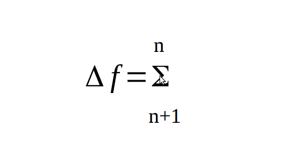

Sorry that I completely disappeared from the simulations forums… I was not feeling very confident talking on open forums…
But now I am thinking of starting an open source initiative.
It will include:
Simulations Platform
UBI Network
Bot Framework
iBot workspace
Blueprint Editor
I am hoping to create a framework on paper around these ideas and open it for people to criticize and contribute possibly.
btw UBI Network is not a socialist or communist in nature.. I believe everyone is getting UBI wrong.. UBI is basically value exchange system. Lowest form of contribution is participation in idle state. I am trying to build Framework that can extract value of an individual through various applications in which individual participation becomes valuable, also providing compensation to participants for their contribution and data anonymously. I think it has potential to biggest optimization problems such as healthcare, diet, careers etc with cross-referencing and benchmarking.. It all interlinks with simulation platform and bot-framework..
I am trying to create a documentation in my free time and I am not terribly good at it… but I have few things done… currently I and one of my friend is involved in this project… I was wondering if you guys would be interested in it…
I personally want to do this because I think we can come up with some great viable solutions… Also I don’t find great satisfaction in what I’m doing . Want to contribute in better ways possible. I think this is a good place…
I really need to externalize my thought and gather some feedbacks… It’s not my main work but I’ve been thinking on these lines for some times and now I think if I should do something about it… First thing is to get my thoughts on paper and document it… Have some reviews and feedbacks. later if it’s valuable enough then probably go out and approach open source community…
I think the best way to start here with you guys since I’ve previously discussed few things mostly non technical stuff with you guys on the forums… I don’t have people around who can discuss all these things… And I’m excited to share with you guys here…
I’ll start with bot framework first and connect all together…
So what’s Bot Framework?
Bot Framework is a playground where all the activity, function and interactions take place. It’s like a sandbox universe which has some governing rules that its constituents and every existing entity inside follow.
Naturally bot framework consist of all bots. You can imagine Bots as matters and rules as forces in this framework… And contexts as energies in the form of relevance factors among bots.
Bots are basically virtual agent. They each have some cognition which operates on memory function and by building awareness from it. To differentiate their function, each bot has a flavour. In bot framework there are 2 types of bots,
There are two types of bots possible in bot framework…
Databot
Metabot
you can think Databot as Atom and Metabot as Molecule…
Databots
Databots are the smallest entity and identify with single piece of information. They learn and store all their past interactions in their memory and build their awareness around it. They also understand their function. They have Interfaces interact with other bots as well as input and output interfaces to be used with graph systems.
Metabots
They identify with collection of bots nesting to carry out specific functions. They too learn and store all their past interactions in their memory and build awareness. They also understand their function. They too have Interfaces but they also have children interfaces from collection bots inside, they too have input and output interfaces to be used with graph systems.
Bots Memory and Awareness Functions
Memory function is a part of bots cognition. Each bot have their own memory space, bots sense any change in their state. There are primarily 2 types detection mechanism. Temporal, Contextual but there can be more custom form of awareness like Relational. And these detection pattern collected over time is called awareness. These awarenesses differ in function from each other but can also work together to improve it own own function. For example Contextual awareness could ask temporal awareness to review and build certain type of context for itself or improve some of its existing context…
Awareness in bots
Temporal Awareness
This awareness is at its core a function of time, it generates timestamps on certain triggering event then pushes these timestamps into temporal awareness of each bots. Triggering event could be anything, default triggers are when some function is called and all bots involved in those function will receive a timestamp of same value. You can also add any manual event as trigger. Thinking engine can also trigger this in background. These timestamps are collected over time for each bot, the awareness size can be customized for each bot. So for example, Bot A winks at Bot B then both bots will receive time same timestamp file containing the time wink interaction took place.
Contextual Awareness
This awareness works in higher abstraction that finds a meaningful structure among bots and their functions. There could be all kinds of context. Context can be built manually or generated automatically. Temporal awareness can also be used to define and build useful context. You can also build simple queries then define the resulting bots in some contexts. So for example Sam was discussing on Artificial Intelligence with a colleague and he remembered about Michael who is an expert in AI. So Michael is contextually linked with AI in Sam’s contextual awareness. This could be expanded or restricted in size as deemed useful.
Other Awarenesses
In theory you can have any type of custom awareness assigned to your bot cognitive model. There’s no restriction on algorithms however any awareness algorithm that optimizes the system will naturally be more valuable. You can have special case awareness which is only applicable to certain function. For example you can have a Relational awareness in a project management system Metabot. You can have frequency awareness that triggers when someone makes a specific request. However in most cases you will chose contextual awareness instead, except in very specific cases that need to deploy special algorithm that contextual awareness isn’t fit for. More examples would be evidence based, language based, predictive awarenesses.
---- I’ll continue more but I need to know if it’s making sense uptil now —
To make it easier, I’ve included few drawings…
It looks like @Blunderbuss has not been active on the forums for over a month… I wished there are few more people on this topic. Can we add more users to this thread now? Other thing I was wondering if it’s possible to create a private thread and visible only to certain users for now…
Nevermind… Wendell got my status upgraded from Basic User to Member… Now i see invite button below 1st message…
There they have solutions to logistical issues as well. It’s an Ethereum based ICO that uses smart contracts to deal with the human element. The cool thing about SingularityNet is that it’s an open marketplace that includes buying, selling and even sharing. It seems like a great place to network collaborations. The individual AI projects can be networked as well; and services can be bought, sold and / or shared. It’s also intended to be a place where AI projects can learn from each other.
I like how you’ve integrated all of the bots. You’ve avoided over complication really well. It’s very clean and practical. It looks like an intelligent database. Am I on the right track?
It looks like it will be storing and processing a lot of personalized data. Do you have some thoughts on how to secure it?
It’s really tip of iceberg… I have solutions but I want to go step by step… The whole solution is based of individual security… I’ll elaborate in next reply…
So in my previous post i explained about basics of bot framework.
My vision of Bot framework is really simple…
Cut down all the technicalities and make development very easy so non-technical people can use it…
I want my friends to who don’t have technical skills yet they can create solutions and contribute in all sorts of ways…
For example optimization solutions…
Examples:
City traffic management…
Make dating app…
Developing interactive experience…
Even developing games… etc etc
Since our bots have memory and awareness, they know about them selves, their function and how they can be used and what other bots they’re related to and what’s their relevancy factor etc and exhibit a purposeful intelligence…
Here’s an example I thought for my friends father who has Matrimonial business (Matchmaking for weddings)
He can use a matrimonial system to aid in his business…
He can do it by simply talking…
You can select level for development… Easy: asks a generalized question, includes a lot of visual and real world examples and works with higher abstract layer development. Intermediate: gets a bit techie and includes words like models, forms, fields, loop, event, timer etc to customize middle level abstraction Hard: be able to modify code, customize every aspect of the bot, complex concepts and algorithms
Case: How my friends dad can build a system for his matrimonial business.
this conversation will generate flow chart in blueprint interface.
There will be Easy, Intermediate and Expert level Interaction.
This is the example of easy level.
Bot: what do you wanna make?user: an AppBot: what is it for?user: for my businessBot: who all will use it? everybody, customers, employeesuser: customers, employeesBot: what do you want to call it?user: d'MatrimBot: do you provide Service, Product or Both?user: serviceBot: what types of Service(s) do you provide?user: Matrimonial
(suppose there are no bots for Matrimonial, so it's a new metabot)
Bot: do you want customer interaction on this app? user: yesBot: who are your customers? people, companies etcuser: peopleBot: do you require their full address? yes full address, only city, don't requireuser: yesBot: list all specific detail you want from your customer?user: race, caste, education, height, work profile, income range, photos, marital status, kundali, BiodataBot: do you interact with customers multiple times?user: yesBot: do you want to log your interactions with customers? user: yesBot: do you prioritize your service to customers?user: yesBot: how would you like to prioritize,
a) service has deadline.
b) manually (priority slider)
c) subscription level
user: a, b, cBot: what types of subscription you need? user: standard and premium. Bot: do you provide free service? user: noBot: do you you meet your customers? user: YesBot: do you want to keep details of your customer meets? user: YesBot: do you want to keep details of your customer interaction on phone & email? user: sometimesBot: how do you take payment from your customers? Per case, per visit, hourly, routinely.user: Per caseBot: what would be the maximum duration of service?user: 6 months.Bot: what is the payment terms? advance, post service, flexible: user: flexibleBot: user:
...
Bot: do you want to limit employees access to d'Matrim?user: yesBot: Can employees add new customers?user: yesBot: Can employees modify a customers? Yes, Yes but keep revision history, Can'tuser: YesBot: Can employees delete a customers? Permanently Delete, Moved to trash, Can'tuser: Moved in TrashBot: Can employees permanently delete customers?user: No.Bot: Can employees change their user details? username, email, password.user: YesBot: Can employees change their profile details? user: No
Developing becomes much easier to a point that mere conversations is enough…
But we need to provide some interface for people to work on and manage bots…
That’s where iBot workspace and blueprint editor comes into the picture…
What is iBot Workspace?
iBot workspace is a completely non-intrusive work environment, it uses bots to manage your interests, activities, contents. etc It also built in blueprint IDE that facilitates bots building. iBot workspace is a place where you will do all your work. here you can create your bots to manage your work, projects, finance, knowledge, wellness, intelligence. It is like extension of you brain, you can create bots in all sorts of flavors.
You can provide skills to your bots or just fork a bot with pre-existing skills, for example a todo bot can be used for your own todo, you can also modify to add or remove certain skills or merge it with other bots using blueprint editor. you could in theory create an advance bot that will perform complete process such as PM bot, CRM bot, case handling bot etc.
Contents:
Content could be of any type, either articles from internet or self written, piece of code, bots, algorithms, idea, song, artwork, pictures, product, service absolutely anything… everything can be monetized and indexed if you chose to.
If you chose to index your content on search network, your bots will make your public content visible to search bots.
You can license and set price for content or related service.
Licensing can be nested, so any license you used to build something which then someone else used to build something, and so on.
Monetization is automatic depending on the license type and contract specified.
In long run, idea is to even provide platform to create any type of content using AI and basic interaction with blueprint.
Sharing and Scope.
Scope of sharing is manageable down to content stream. Share Workspace, bots or certain post in bots, with trusted individuals, public or no one. Bots themselves are intelligent and manage their privacy depending on your preference. Each bot has command language, that gives instruction to bot about their behaviors. /share start, /share end, /share @shad, /share #nba_group, /share stop, /share for 1hr etc
Sharing scope is color coded with relevant icons, for example
Team Collaboration
Like skype or slack, you could also work in a team on projects or anything else. using shared scope with bots, their bot and your bot will be buffer between each other, bot’s will manage team interaction and create summery of it in their project scope.
for example,
“vconnect” bot is a flavor of PM bot, it has skills to work with project repos, time-line, files, handling interactions, reminders etc.
“vconnect” bot shared to the team which they can subscribe, once subscribed by other member of the team, bot is cloned for that member and now functions in a scope shared state similar to original creator. all members can add content to it and choose to keep personal or share. Members can choose bot state to see only their stream in the bot, or all shared stream.
Use blueprint to create your bots.
Blueprint editor has Easy, Intermediate and Expert mode… It is upto user to decide what they wanna use…
You can use blueprint editor to create bots, you can choose base flavor for the bot and add skills to them using blueprint. In easy mode user can simply use command like to chat or speak to build bots…
So I created a new bot of PM flavor, assigned a new skill for taking screen grabs of the interfaces after every change committed.
So everything is a bot here… When you create an account on Simulation Platform, you become a member of UBI network too…
First thing after registering is you get your personal BOT… your personal bot is your digital self. I like to think it as persons extended cognition. Everything you do, every interaction are all through your bot… You also get your own public URL… for example. shad.ubi.block… You can get your own computeblock or host on shared platform… I have discussed computeblocks extensively here…
As you can see. It’s a personal space for each individual where all services are hosted and managed with sharing option… It’s not owned by corporations government or any such entity… What should be your is yours… Protected… But you can always monetize whatever on your contents, bots or data anything…
If you notice in image above… Your Social Media, accounts, tweets, photos are all hosted on your own personal space and given access to public.,…
Sorry there’s too much information… I needed to provide sufficient enough information so you guys can easily understand what I’m trying to achieve with Bot framework… I will further elaborate on anything you want to know about Bot Framework and Blueprint interface…
Yes, you could say that it’s an intelligent database… Rightnow in most development framework data are just data… What I’m doing is assigning intelligent bots so data themselves can become self aware for their purpose. Next stage is the fluid semantics which can be trained to work as per users preference… It’s is also the easiest way to develop solutions in higher abstraction without worrying about technicalities… Probably the best part is, you can train bots to adapt relevancy factors and run the simulation to create memory and awareness for bots… For example… You can fork an AgeCompare Bot in your specific dating app and train to accept number between 18-26 if match is 22yo… through simulations and it retains its memory… It practically replaces manual coding of conditions etc… This method using bots can be used to even create movies and games in future… there’s really no limited conceptually…
Kinda yes… But users creates their privacy and security profile… Your selfBot does management and enforcing as instructed by you… also fights spams and security threats as trained by you… Your bot can add additional security skills profile provided by other users… similarly you can also sell your security profile… Idea is you are never directly exposed to internet… You always have your own trusted selfbot that takes care of all interactions, recommend or warns you. of fake news etc… also the bot cognition is really what you make of it. selfbot will reflect your preference & personality.
Also don’t consider it as blockchain fads… It’s really about sustainable solution based on open computation and democratization of intelligence…
You can honestly write anything you don’t like… the whole purpose is to understand and get feedbacks.
Yes. You could say that… Almost all of the function is in the system design… This way it will be very difficult to introduce bias in the system…
Democratization of intelligence depends on open computation infrastructure… It is obvious that computation pool will be required by individuals when you have your own digital cognition to process things and to build intelligent services… It should not not be owned by few corporations only… Common computation network is Just like Internet… In other word computation is the wealth…
Your computeblock is managed by your SelfBot… The idea of selfbot is very deep… It’s not only an assistant but also does work on your behalf… You can train your AISelf to do certain work… It will try to try maximise output according to available computation and most suitable pool… So you can say Shanghai networks are better at “Image recognition” and Toronto network better in specific “AI training” and Mumbai is better in 3D rendering… You can imagine the marketplaces for specialized services by pool of computeblocks in networks… I think we discussed it in simulations forums quite a lot…
Yes, It evolves… Infact system design evolves too but not committed until passes in simulations environment… It grows like neural web however I have specific architecture for the evolution of neural structure… Architecture Building contextual machine intelligence with memory effect in information… I’ll discuss that in detail in UBI network topic soon…
I made this to explain where I’m going on with all this…
I feel we intentionally and unintentionally introduce huge inefficiencies in everything… It’s simply because we’re as human are not great at lot of things… I’m trying to figure out if we can offload a things we aren’t good at and still manage control over machines… So the image represents that… Everything is optimization problem… We as humans can’t focus on many things, but collectively we can do quite amazing… Like collective intelligence… However we’ve to look beyond personal hoarding… We can’t make people change their motivation for greater collective good but we can build a system design in which individuals find motivations and want to contribute for collective good and make good return too… I feel most things are about intention and motivation…
Individual Motivation becomes part of collective motivation while still being profitable. Unsustainability, Rent-seeing and hoarding is reduced. People start ideating and simulating at the same time keep learning… Most executions and Integration can be done through automation by employing machines and bots… This empowers individuals while keeping all the features of free market intact… I’ll elaborate later why I think it’s an important things if we want to survive as civilization…
I might not understand the question sometimes and go on all sorts of tangents. I might be wrong in certain things here. If there’s anything specific you’re trying to figure out then you can make it bolder so i know what to focus on… Or you can provide examples…
Yes, of course. I realize that much of the system state is essentially dictated by the entries that the user makes; but does it go deeper?
I guess what I’m really asking is, how much intelligence or autonomy does the system have over it’s own state? How much of the system state (concerning the platform itself) is left to human administration?
I realize that this is a big can of worms; that could run into a long conversation, but I’m enjoying this conversation.
So intelligence is a higher manifestation of various algorithms which can be added as Skill flavor Metabots… You can add them as relevancy factor to another bot… However each bot needs some resource allocated in terms of memory size and processing pool from thinking engine… you can technically add skills bots such as prediction analysis or image recognition to optimize functions and improve efficiency of any other bot.
This analogy works better…
Single piece of information is Databot like atom…
and everything else is Metabot like molecule…
So skills are kinda like complex molecule which you can feed any other bot…
so in for example human is a metabot contains of molecule such as proteins, bones and others together to form big blob of flesh but we identify these abstractions as hands, legs, hair, fingernails, eyes etc, they too contain other metabots such as protein, fat, water which are also metabots containing databots such as iron, carbon, nitrogen etc…
Don’t think of bots made up of other nested bots… But they are really abstract connection based on their relevancy factor… Relevance factors basically means how they’re relating to each other… like a transactional memory from temporal and contextual interactions… or you can force train them or create your own type of awareness… see image below… they’re connected through various awareness interfaces kinda like frequency channels and strength of signal…
Also there’s no absolute type of Intelligence here… It’s how users will integrate things to optimize the function of bots… Technically you can integrate any kind of algorithms and propagate all sorts of intelligence. Something is only intelligent if it can produce result in reasonable time… It’s basically trade off against processing and time… I see intelligence as a function of optimization…
Okay, took me a while to read through this. I have to admit a don’t understand everything yet (I don’t have any computer science background and I tripped over a few of the analogies).
Otherwise: Interesting concept and an amazing tool if it works the way you describe it. I am sure I am not good enough to contribute with my programming skills, however if you need someone to think through concepts, logic, maths or if you need a guinea pig for testing, I am your volunteer.
Thank you.
I thought I’ll use this opportunity to express my position…
I don’t want people to force their interest into something. In fact that’s the last thing I would wanna do to anyone… however I’m trying to make basic structure and documentation so very little attention and interest is enough to understand and see the larger picture for most people. I mean best help would be to just try to understand and you can probably relate to all sorts of real world examples on your own… Then you’ll probably know yourself how you can contribute…
And It’s bigger than a project or any of us. Not sure how to explain but it’s could be as useful and important for you as me or anyone. I really think many big problems can be solved with right implementation with some simple solutions… I don’t have any personal agenda. I thought I’ll put some effort to explore solutions and technology around it… and I kinda enjoy it too…
I have coded a basic structure of bot framework… Databot & Metabot and all that stuff and it seems to function as intended however a lot of optimization is required. eventually i’ll make everything open source along with documentation and feedbacks here. At this point it’s all ideations… I code on it sometimes kinda like weekend hobby whenever I find some motivation… And talking here gives me motivation…
Sorry… I’m worst at explaining… and I write a lot. mostly because I have never really written or discussed on forums before and I find it very hard maintain the scope and try to compensate with writing a lot hoping that I convey… hopefully I’ll get better…
So Bot framework is out of the way… if you have questions please ask… I will include all the technicals and system maps of complete system in time…
i would like to discuss Simulation Platform and UBI network now… Bot framework is just a byproduct solution… But the Simulations and UBI are the product of our philosophical and moral attention. it’s the result of necessity and not luxury… It’s not about whether we want it or need it. but i somehow feel that we can’t manage hyper-concoctions which future will bring on us.
I don’t really care if this specific solution is implemented, for me It’s just a pocket reality I’m presenting here… and I feel people should be aware of possibility of such solutions. People can choose whatever future they want, my only concern is not knowing.
Before I’ll discuss technicalities and various stage of implementation… I’ll add an easy overview with some philosophical points…
Please discuss and criticize if you find anything offensive here. It’s very important for my judgment. Honestly I’m not much exposed only recently I’ve started talking to people… I don’t even understand most thing… if you point me to a problem then I’ll try to create solutions for it… But I need to account for variables you can provide…
What is a Simulation Platform?
It’s an open platform where people can do simulations of ideas and concepts. My vision of simulation platform is very simple… We need a practical solution to mimic reality… So we do stuff there before trying in real world…
But how is it possible simulate reality? You don’t have to simulate everything to get reasonable judgement… Just like we use our heuristics to judge reality. Simulation platform will do same for us except with billions of minds…
We’re all data points and we create all sorts of datasets. food, education, career, health, lifestyle, entertainments etc etc… Simulations platform will use these datasets to create a feedback system which we can add to our technologically charged heuristics…
And We aren’t the only data point… We can create endless pool of data points individually too… That’s the crux of simulations… All my solutions derive from reality… I see reality as puzzle and and don’t want to paint reality with my own thoughts and ideas, I would like to solve it… with everyone…
I believe world’s biggest problems can be solved with right implementation…
It’s shame that we’re still confused about tons of things. We introduce enormous amount of unsustainability and inefficiencies. We know our value structure will questionable in future and downright appalling in some cases, yet we figure out excuses to ignore it…
Anyway, What I’m really saying here is it affects us personally and very deeply and we can’t even comprehend… Every family have health, diet & fitness problems,
I am sure that 95% of all Health related issues can be solved including mental disorders, most of socio economic problems can be handled without affecting hierarchy of the society. Almost all of optimization problems can be fixed because they are often human errors…
We as human are literally future blind… But we can still tools and fix it… Simulations Platform + UBI Network solves this problem…
I don’t want to blabber things here but provide a viable solutions and tons of nuances which people seem to miss… I think I’ll elaborate in more concise way in next reply…
@GFX_Garage Can you invite someone to this thread who you think might provide feedbacks and possibly be interested in anyway… Technical or otherwise… Btw @cvr in this thread is my friend…
I cast as wide a net as I could; and it only captured you and @Blunderbuss. Others just found it either entertaining or temporarily interesting. Well, some characterized it as negativity as well.
It looks like you’re creating a platform for not only outsourcing some of human intelligence to more practical computation processes, but also coordinating some of the distributed intelligence as well. This looks really interesting to me; especially in the context of a UBI model.
To explain my interest, I need to put my cards on the table about UBI. I am in favor of UBI; but not as an overall solution. I’m more interested in it as a safety net.
I think you’re right about how beneficial this platform could be in conjunction with UBI; but I also think it could be just generally beneficial. You’re probably right that it could sort out a lot of expensive human error. I also realize how difficult it is to explain how expensive errors get when there’s a chain reaction throughout the system; that was initialized by it. That also means realizing that solving those issues has an equal and opposite effect.
Under UBI, I assume that many people would have some time on their hands. I strongly suspect that time would be used to improve their station. This project looks like something that could help with that. It looks open ended enough to allow the dynamics to solve themselves.
So yeah, so far I think it’s pretty freakin’ cool.
I’ll come to UBI, just been busy lately… I think i have few nuances here… I don’t even wanna call it UBI because it creates confusion… I think UBI is just a value extraction from simply being human… We have to build applications which can extract those value…
Think it as numbers game. everything is about trading numbers in the game. If numbers are extracted then it’s tradeable within the logic of the system. We’re often worried about supply and demand however just looking everything from number perspective, it just shifts the processes to more optimized flow… We cut down on efficiency where numbers are looping in closed system without actually making much progress forward… For example, diet and healthcare. we’re just looping… example: In order for medical industry to thrive, more people need to get sick… and they do it by making questionable lifestyle choices and diets. It’s all happening because we’re so disconnected and manipulated that our judgement doesn’t know how to reciprocate… At least for lot of people… All this can be solved to great extent by simulations platform and UBI network…
But let’s not call it UBI… let’s name it something else… something value something. I have to think about a name… you can do too… Because no one is providing money to anyone… who will do that? who will control it? governments? independent organization. what are the caveats. it will quickly become ugly for sure… I don’t think that’s a right way to go about it… I can promise you that participation in idle state will provide safetynet for everyone… We’re not thinking how valuable of datapoints people represent… We can actually solve 95% of all optimization or otherwise problems with cross-benchmarking…
BTW, i had written few things earlier… I thought I’ll share it here… You can tell me what you think? I just wrote all this at one go so i might be wrong in places… However you can get good idea of the sentiment in the arguments…
Simulating Scenarios
**Scenario 1 If it ain’t broken, why fix it?**
This is dominating thought among large part of our civilization and unfortunately it is also unbelievably short sighted. I’ll explain thisin multiple points why thisisnot the best way to think about it.
**1. Information is broken.**
It’s not just about what but also who andthisis how we understand and interact with most informations today. Every few years we uncover certain practices that has costed our civilization, environment or both a great deal. There’re many driving factors but two of the most important factors include, exploiting for profitability and incapability to comprehend long term effects. This has happened with food, healthcare, tobacco, oil, education and now happening in technology industry. At what point we call something broken? When it affects millions or billions and even die?
This is the problem since the beginning human civilization, we have never been able to trust an information directly but rather evaluate its legitimacy from credibility of the source. It doesn’t matter what is it about rather who’s saying it. If there’s a motive involved then any information or its sentimental value will be purposely distorted.
Tech companies are trying to create fake news detector andif they’ll ever successfully create a truth machine then their own business model will inversely be affected by it, therefore it will never be in their best interests even if it possible to make something like that. Rest assured there’ll always be fallacies, biases, reality distortion that people will have to judge for themselves.
We have mechanisms and systems in place to counteract wrong intentions and decets with laws, accountability and peer reviews. However we don’t have control over lobbyists and purposely implanted biases, it’s becomes very difficult to even differentiate genuine from biased, rejection becomes our default action discarding everything. These are very complicated things for an average person to comprehend. Some independent entities who understand better try to translate for general population but it’ still not good enough for hyper concoctions of bad and good informations.
It’s almost impossible to arrive anywhere close to truth. Everybody feels that what they know is the truth until it isn’t. People treat their knowledge as their own discovery and influence other without checking on it. There can never be absolute certainty but if thought hard enough and willing to fix it, there could be much better model of certainty with help of abstract framework.
**2. Our judgement is broken.**
We live in an age of hyper-complexities and we can’t help but constantly judge people and things except may be very good friend or family. It’s a reciprocal system we’ve adapted to protect ourselves and we aren’t even good at it. In fact it becomes your protective wall which isas weak as your own judgment and any smart manipulator can strike through it, winning your attention and trust while potentially disabling your guard permanently for further manipulation. This is such a common practice in our timeline that attracts manipulation to become second nature for lot of people and businesses. This affects almost everyone and some people can get very hard end of it. It has huge effect on our lives and takes hell lot of attention that people might utilize somewhere elseif we didn’t have to do it for ourselves.
**3. Human attention and memory is broken.**
Probably the hardest problem is we forget things andnot attentive enough. This is the limitation of human brain and we can notdo a lot about it. Even if we store the information but ultimately our judgement is constantly battling with flood ofnew information that second questions your own understanding of things. Past record of your interaction gets lost and your judgement becomes some sort of fluid that flows directionless. This isnot necessarily truefor everyone but it is a fundamental limitations of being a human. Especially overflowing information and interactions can not keep you from constant distractions. In order to keep up, most will spent their time inspecting or avoiding things we aren’t even good at, just like we aren’t good at most mental tasks.
**4. Education is broken.. kinda..**
Talk about education, what is the difference between teaching a kid and making them learn. We have very monotonous view of what learning should be. Learning isnot same as reading, if a kid were to discover something on their own rather than reading about it then it could have profound effect on their ability to learn. Kids are put through constant pressure to compete which might be actually be harmful to their actual potential. I know It’s easy to say than done and I am thankful to the education system because it is better than nothing. but today we could do at least a hundred fold better as we have access to modern technologies that can enhance education to be more interactive with trial and error approach in simulated environment. This is how our brains have evolved to learns, it is supposed to be quick and easy for us and early exposure to such methodologies will enable extremely bright and happy students world has ever seen. Imagine discovering relativity and thermodynamics on your own rather than reading in a book. When you discover something on you own then it is truly yours and you understand it intuitively beyond books.
**5. Healthcare, Food and everything else broken too.**
Again, I’m glad that we have healthcare system protecting us from dying with most diseases that would have killed you few decade back. It has enormous positive impact on human condition and life expectancy. But it is also the most hideous and vicious industry known today. I am not arguing that healthcare is a right. I am not making any political argument here. But it could have been way way way better than it is today. There’s also that it could have been way worse but many things could have been worse and that’s not the reason to not talk about flaws. Healthcare is so easily understandable..
But I can try with example of health, If there’s was a framework in which people health data are protected, andnot owned by corporations or government entities then we would trust health devices more and probably participate in massive health studies of all kinds anonymously and there’s could have been solutions which might wipe out half the healthcare problems in the world. It is supposed to be like that.
This is pure evil of these entities who want to own our medical identity and put a restriction to extremely important system which could use our health data to solve humanity’s health crisis because thisis how suppose to solve it.. collectively.. This is a function of evolution and it isnot supposed to be restricted like this.
And for diet, we’ve still not figured out our diet. Thousands of peer reviews and anecdotal evidences in all direction, most things turn out to be wrong. If we understand that human body is the most complicated machine in the universe as we know. A few people with few random controlled tests cannot figure out everything about such massive complexities which can behave very narrowly and we might even make it worse. This too requires collective participation of all human variance as it is supposed to be to solve such massive problems.
And last I’ll talk about our environment and our behaviour towards it. I can’t stress this enough how irresponsible we have been andcontinue to be. I understand that there’s always some trade-offs but we need to evaluate and adjust our values better towards environment. We need to understand that we can not trade a bit of comfort against enormous consequence. For example, we create plastics bottles for consumable worth 50 cents. We treat our environment like a wasteland and it’s difficult for people to even understand how ridiculously bad this behaviour isand the kind of footprint they leave behind. We are on the rolling spree fueled by artificial demands in the markets.
In closing of scenario 1
I would suggest if we stop fooling ourselves. Future will bite us back if we’re not trading our values properly. **_Everything above is solvable by Simulation platform and Barter Network (previously know as UBI Network)_**
I'll put scenario 2, 3 and 4 Later..
I’ll try to give example by some test cases… Sam Thomas creates an account on simulation platform.
#1 Registration:
CLI: Create new Metabot as Sam7785 type Person (is a metabot)
Sam7785 is now a new Metabot identified as a human person, Sam7785 inherited basic architectural features of Person Metabot
Sam7785 becomes the AISelf of Sam Thomas…
So all relevant bots of Person bot are also inherited…
Now you can simply fill the details…
Sam7785.firstname = Sam
Sam7785.lastname = Thomas
Sam7785.age = 46
Sam7785.gender = male
Etc etc
Now lets say Sam7785 is working professionaly.
You can add define Sam7785 as Employee…
CLI: Sam7785 is Employee.
So it automatically inherits all professional features of Employee Metabot…
Now you can fill his employement details.
Sam7785.employer = IBM
Sam7785.designation = Developer
Now IBM and “Developer” are also a Metabot ans so on…
#2 Vitals Tracking:
Sam wears a apple watch that records his vitals…
But apple watch has Sam7785 for data Interfacing…
Apple company can’t fetch data directly from watchBot instead they’ve to ask Sam7785 bot for data… WatchBots job is to only track vitals and provide to Sam7785 Bot…
#3: Health and fitness
Sam has family history of heart problems and he also smokes.
Sam7785 will cross-benchmark with other similarly aged people who have similar lifestyle and stress level… Sam gets irritated and his heart rate elevates whenever he overslept… etc etc
Technically it could be any dimension of benchmarking like food, medication, allergies etc…
4#: Performance tracking
Sam has temperament which is suited for this, this and this… etc
Depending on Sams talent, ability, temperament, habits, whether he should take certain project or howmuch time he should quote…
And all other kinds of datapoints datasets to benchmark and crossref.
all that stuff… you get the idea. bots adapt and inherit features from other…
All bots have memory and build their awarenesses… It’s an intelligent workflow…
They retain their interactions in memories.
Btw I asked and invited @wendell in this thread, I’m not expecting him to reply given his schedule and the amount of information here… But I’m making an infographics and possibly animation which will encompass all logics and flow in one place… So it becomes easier for new people to follow…
Please let me know if it makes sense… And ask if any confusion… thanks
It would be easier to create a similar watch; even with Apple being the vicious patent trolls that they are, than to solve this problem.
I guess I may be nitpicking here; as it’s hypothetical. I do like this part though. It may be my favorite part ; but still very difficult.
I like the implementation of the avatar; and how it gives the user the ability to leverage their own data. This is particularly interesting to me; because data is valuable either in aggregate or widely distributed. If you have specific solutions for individuals to distribute their data in a large way, such as, white and black lists for specific companies or types of companies, or even in some context, I’d be interested to see that.
I’ve started brainstorming a new project this morning. It’s a framework for a community based open marketplace for ICOs. It’s a poliocratic and meritocratic method for brokerage and ratings. It’s not really a model for a system itself though. Like my other project, it’s a theoretical model that promotes self organization. It doesn’t go into the detail that your project goes into; but knowing some of the possibilities that exist at the technical level might give me more confidence in it’s feasibility. This is one of the reasons that I’m interested in your thoughts on how individuals can leverage their data. I’ve been considering software solutions; but I’m not confident that I’m on track. I’m much better at theoretical models than applied models. Of course the theory won’t go into that much detail; but the details are important for the theory to function.
I guess I’m a little distracted. I’ve been working hard on this all day.
Actually it might not be that difficult considering most companies will realize it’s not their place to horde and own all these sensitive data because it also comes with responsibility now and great danger in future even more… Also once people know the value of around it then they’ll prefer this implementation over others… Apple here’s is just an example… however you can consider thousand other brands or manufacturers who’ll be happy if purpose of products, services, platforms and data are separated and not blindly hording like today…
Exactly… If you do some mental simulation then you’ll realize that it’s actually biggest market… literally trillion dollar market because this makes data be more useful for its purpose than mindless controlling power your data… I’m not sure why do even business wanna do that… It’s literally creating hurdles in the progress forward and not able to solve such basics…
not yet sure. What does brokerage mean here? Is it on the line of accountability & rating system? Sorry I can’t parse by reading unless I’ve conceptualized something similar before . some processing disability shit. But it reminds me little bit a project called “promiseland” i worked some years back. it revolved around accountability, agreements and ratings… not sure it’s similar in nature. in any case, I 'll do visualize conceptualize technicals tonight or tomorrow and get back. if you could explain the flow then would be best…
On another note… I think I want to such things for people… like ideations, abstractions and simulation… and get myself crowdfund from patreon. Like a creative consultant with technical solutions. If I could earn as much as my income rightnow then I really don’t want to work for anyone… I can make videos and all by myself but I’m not sure I could survive vicious comments and attacks on internet…
I think companies will realize it too… in the long run… after competing with other solutions. It’s still a difficult problem; from point A to point B though. It’s because it’s built in to the system and the culture. Patrons are required to accept the EULA before they can initialize and use the product; and the EULA includes an agreement for data usage. Personalized data is also a significant portion of many companies revenue; and they use it secure stockholder value. Here in the US, the markets are pretty saturated and collecting and selling more and more data keeps profits going up and thus stocks keep going up too.
I agree that there are a lot of liabilities that effect stock prices as well. There are also insurance premiums to consider; not to mention public relations. Storing sensitive data is a large responsibility that is slowly creeping it’s way into public consciousness.
It does seem to be a solvable problem; but it looks like a long hard road.
Brokerage is essentially advice for what ICOs to invest in. ICOs are community funded and traded businesses; kind of like corporations. The difference is that the average person can be involved in the initial rounds of funding with small amounts of money. The initial rounds are where the actual money is made because the token (stock) prices are so low. It’s interesting because a token market is much more likely to distribute wealth than the stock market.
The ICO pool gets attention from patrons through the rating services; and the ICOs are of course rated by the rating services. The rating services are also rated by the patrons. Some of the logistics of that are still up in the air as of yet.
Some of the ICOs may have sensitive, personalized data to be protected. This doesn’t really seem to be a problem for ratings; as anonymized, statistical data is what’s really valuable for ratings. The only way that personalized data is really relevant for ratings is if the ICO isn’t securing it. That might (probably will) effect their rating in a negative way.
In this model, patrons might be able to leverage their own data with software solutions and some form of digital marketplace. The value of it is being able to leverage it in volume, with a large number of ICOs.
Ok. I think I get It… from what I understood… I created this flow using simulations platform and bots framework… I thought It’s good way to design your solutions using my solutions since that’s what the purpose is for simulations platform…
I am still not very clear but you can probably tell me if I’m thinking on right track…
I think we can try explaining population who can understand by presenting simulated scenarios and thought experiments, I really think there are enough smart people who can influence in their expertise, topics and concerns to make the difference. I want to present open arguments to these corporations by asking important questions which will affect us… What’s their vantages points exactly? They’ll either have to make solutions that will satisfy our safety or come to terms with some kind standard that will not f**k us over into the dystopian future…
It will create more opportunities that most probably results in better wealth distribution… Or maybe it will be same as now only reshuffled. i don’t know. it’s very difficult to predict.
Since this was mentioned, i thought I’ll put my views on this topic because my solutions are not trying to solve wealth distribution and all that… It might result in that direction over time but I’m am not looking to disrupt but only provide competing solutions towards sustainability and opportunities. just like any other platform we have today…
I find distribution of wealth topic very confusing? how do you know and who decides it? My views such topics are not strong and I normally think it’s best not to think like this… Any well thought reasonable framework will never try to fix such problems if it’s even problem or just function of evolution…
Also I think people are not inherently unlucky, except some are definitely…
but generally it’s understood that luck favours those more who seek opportunities. It’s possible for people achieve high socio-economic status but it takes what it takes… System framework should not try to fix that artificially based on sentiments because it’s not really a problem… All a system can do is produce create better opportunities and patch loopholes and cut our inefficiencies… and we should focus on fixing and probably wealth distribution will get better along? i think… i don’t know…
The problem is there are people who’ll can’t find ways to contribute and some will never never contribute and demand as if entitled… But I think these sentiments are the result of increased social and intellectual pressure and not being able to cope up… which happens to be quite a large part of population…
That’s why I think Simulations + BarterNetwork + Bot Framework will be useful tool to alleviate such sentiments and provide opportunities for people and better meaning to exist so people don’t have to worry about surviving everyday and can focus better on contributing whatever ways…
I agree that a community ratings framework for ICOs isn’t an overall solution. I’ve just been trying to make more immediate solutions function better. The ICO market is much more speculative (risky) than the stock market right now; because the stock market is regulated. This probably means that the ICO market is at risk for regulation. This is the problem that I’ve been concentrating on. I’m sure that ICOs and token investors would appreciate some help in that regard.
Personally, I’d like to see financial and currency systems collapse expediently; so that we can get on with creating systems with a higher degree of coherence. I think there would be less over all suffering in that scenario. I think opportunism under crisis is the most probable way to effect fundamental change. Since finance and currency is such a large part of the culture, it may die vary hard though. There may be more incremental solutions that lead to change.
It’s the organizing platforms that are the real bringer of change though. It’s not discourse and argumentation that will sway the culture. It will be the projects that demonstrate the ability to raise the standard of living that will move us forward; regardless of the existing economic state. As important as it is to be prepared with more radical solutions in the event of “the shit hitting the fan”, knowledge of the incremental solutions is likely to help; in that more radical solutions might be fashioned to existing economic networks.
It seems likely that organizing structures will replace currency systems; but the road to that outcome isn’t clear. As it stands, distribution of wealth is closely tied to distribution of resources and opportunities. If I’m wrong about the path to fundamental economic change, I may have disallowed myself an opportunity to further reduce the suffering; when it’s all said and done.
I also think that ICOs are a currency killer. I think they have the potential to quickly lead currency systems to their final destination. By creating an environment where ICOs can flourish, currency systems could progress more rapidly to their obsolescence. I think this means creating the organizing structures that will replace the more arbitrary currency model; and fashioning them to the emerging markets, so that their value will be demonstrated. This is one of the reasons that the SingularityNet model is so interesting to me.
The interesting thing about ICOs themselves is that they are more community oriented and in their nascent stages. Those involved in ICOs are more accommodating of community based, decentralized solutions. I was thinking that promoting an integrated, polyocratic framework may be possible by fashioning it to a community based, ICO marketplace. This might demonstrate it’s value as an organizing structure. This might also result in inching out the currency as a basis.
At some point, the developers and administrators will be able to clearly see that the currency is over complicating and thus holding back the economic organization that exists. At that point, there will be motivation to create post currency markets that will drive finance and thus currency into extinction. All of the data and trends suggest that finance will kill currency. I’m thinking that helping it along could have favorable effects.
Failure is also determined by some frame of reference in human thinking. If finance and currency are failing in reference to comparison with more effective, organizing networks, then both currency and finance fall out of favor.
I’ve always been in favor of more immediate, incremental change for the reasons that I’ve just explained. I’m now thinking of applying the understanding that crises exist in a gradient of severity toward opportunism in less dire and more immediate circumstances… to demonstrate the value of economic organization.
I’m essentially upping the game with my strategy. The theoretical work that I’m doing with my ONS project will stay the same. The only difference is that I’m trying to demonstrate the value of it in current models.
It’s interesting… I have tons of things but too little time right now… I have to go in 5 minutes… So I’ll break it down properly in next reply… but here’s some overview…
Stock market is raising money in regulated framework though public. Quarterly performance report, vision, equity and all that stuff…
ICO is raising money in unregulated though public… as of now ICOs are all about great potential, glorious vision, thinking, wonderlands and mostly woowoo in poorly managed vague frameworks and almost never executed as promised.
The way I see it…
Both systems can be improved to great extent and have their advantages and disadvantages… But we have to look beyond all that…
What is a company? and why is it funded?
Idea? vision? group of employees? stability? trust? assets? thousand other attributes and properties…
For example: take Tesla since it’s quite unique case for a company…
What is Tesla? where’s the value coming from?
Great Electric cars? Company vision? Elon Musk? Potential?
My point is, it all boils down to trust framework…
Trust is a factor that we use in everything, our judgement, options and selections, everything that comes along…
So getting back to company question.
I think fundamentally what a company is? Group of people working on things that creates a value and that’s why investors fund it. But it’s often narrow and distorted for profitability and wrong motivations because framework doesn’t account for few important parameters… Like long term sustainability and few other stuff…
Sorry… I have to leave right now but I have very interesting things to present here…
I get what you are saying here; but you and I both are taking some trust out of the equation in a way. The patrons and entrepreneurs would not have to trust each other to behave fairly and responsibly. It would be the systems that would be trusted; because of their level of economic organization. They would be trusting in something that just works well. Maximizing that effect means demonstrating that the systems are trustworthy. This isn’t something that is going to be easy to explain to a general audience; not to mention swaying one.
It’s true, finance is nonsense; and currency systems have always caused more problems than they have solved. Securities (stocks, bonds etc.) have controlling interest in every economy’s GDP on the planet. That means that more money is made from betting on the longevity of companies and such than is made from products and services. For some reason, very few people care.
My experience with discourse has been consistent.
“What kind of political system are you trying to force on me”?
“This doesn’t fit with what I was taught; so it’s not likely”.
“This doesn’t fit with my personal experience; so it’s not likely”.
“Where’s the money in it”?
“How will this effect my life”?
“Everything is fine. People behaving badly is why things break”.
“The end is near”!
etc. etc. etc.
People who get it are few and far between. Few of the people who do get it have confidence in effecting real change. This is an enormous problem.
Even I don’t get a tons of things… But that’s the point right… We kinda already know our limitations but still try our best to manage whatever we’ve got. It’s actually quite simple, people who can compete and influence will be responsible creating whatever future… Like google and facebook they’re not necessarily great solutions but others didn’t do better job competing… so we better make great solutions and outcompete bad solutions by same rules…
If I have to chose between a hypothetical but almost perfect system and what we have right now… I will always choose what we have now. and the reason is this system allows competing of optimizations solutions within itself. If you have better solutions then you can compete in the landscapes. that’s what is happening with crypto space right… No one is stopping it or sabotaging anyone.
It’s war of ideas and most crypto solutions are rejected because they are not good enough and implementation isn’t right.
Also I think that most people working on crypto are delusional in terms of their expectation for mainstream adoption. because it doesn’t work like that… You can’t just replace things by your thoughts and ideas…
The fact that you can freely propose new frontier ideas and governance system is the proof that we are doing right… Not best but not worst also… I am the critic of inefficient processes and make solutions to promote optimizations but it’s all within the system with the goal to improve from within.
We do categorical inspection and create values. The system is evolving and it will get closure to being more efficient but it takes what it takes. I agree it’s not easy but I think it is not suppose to be easy. It has to be competed and influenced. And technological solutions, data and intelligence will do it… Technology adds to our intuitions and heuristics evolves to accommodate new age ideas as it’s been doing it historically.
Also We have to be very realistic because there’s just too much at stake.
Change is already very fast and I’m confident that solutions will compete and merge along the way. I’m optimistic and I intend to compete with good ideas… It doesn’t matter to me who’s proposing it.
Also we have to realize that most people are smart enough to see the problem and recognize viable solutions… You have to try very hard to convince people… it’s first step and bigger the solutions harder to convince and almost impossible compete. I guess this should be quite obvious to person who’s making alternative solutions.
I’ll come to trust framework later… I think there’s a trend between technology, consciousness and function of society…
People are definitely smart enough. That’s not the problem. It tends to be contextual. Upending the entire system with fundamental changes also changes the context. It tends to mean thinking about the dynamics in a different way… with different heuristics. This is something that is actually wired into human neurology. The connections in the brain have to restructure for the new heuristics to compute. This is one thing that digital computers are better at than humans. With digital computers, the loading of an application can change the heuristics. With humans it requires physical changes in the wetware.
We’re on the same page when it comes to the goal. We’re also agreeing on possible paths. There are just a few disagreements concerning methodology. That’s probably to be expected.
This is turning out to be a fruitful conversation.
I have a funny anecdote.
When BitCoin was at about $20,000, I suggested that miners were being anti-competitive. A miner suggested that more miners wouldn’t mean lower transaction fees. This is obviously nonsense. The problem with BitCoin is poorly structured democranomics. Miners are insufficient in number and still the majority, and thus control the vote. It’s that simple. I asked the miner some leading questions; and he just stopped responding.
Ehtereum has a much better community for advancement of the tech. More novelty came out of Ethereum in the first year than BitCion has produced as of yet. Vitalik’s vision is a bit truncated; but he’s very open to novelty. He is definitely one of the ones who get’s it. He seems to be more open to argumentation as well; but it still boils down to demonstration.
I think so, but I also think that we’re getting lost in translations… at least I’m… but it will get clearer as we go… So I made this to better explain what I think is where you and I are deferring on possible paths…
So take example for health… Just like anything, health is really a number game. Everything action we take has some trade-offs… Some people try to make informed choices, but most people make bad choices because they’re uninformed or not easy for them to understand. This is where we have these health organizations come, they make our guidelines and limitations of what is better for us… Like balanced diet…
But it’s an incomplete approach to solve the problems, lack of better solution and exhibit as societal problems like drugs. so we make policies to save people from themselves but arguably put people on wrong paths like sugar epidemic.
I guess what I’m saying is, this all can be fix nicely if we gave insights to people in a framework that focuses on problems solving. We can make algorithms to better understand our place in the world… People can do it by analysing external influences with their internal logic so they can guide themselves in achieving whatever their goals are and suggest needed commitment, creativity and curiosity.
Take example of substance use:
It’s all a mess and there’s no easy way to solve this… certainly not by enforcing unnecessary laws… But it is possible to solve by technologically charged heuristics. If we didn’t restrict on substances use instead make it available through legal pharmacy and monitored quantity. if individual had highest insights about their live health so they can do calculations on their own health or using health bots.
They can play all sorts of number game and by cross-referencing, benchmarking side effects on their own individual health rather than what general consensus say. decide what kinda of trade-offs they want to play against.
I think what’s happening, people do not know shit as much as they think they know and also don’t know who to trust. Like most people in marijuana culture seems to have confirmation bias, they seem to think it doesn’t have negative effect because many successful people smoke. Well successful people drink alcohol too but we know the damage… somehow people seems to miss such many points of relativity and absolute choices… If something doesn’t affect negatively to one person then it doesn’t mean it’s good for everybody… and all similar judgement issues in society… of course it’s just an example I used, I’m not suggesting anything here and you can always have restrictions on limits enforced by law.
I guess what I’m saying is, we can have infinite variations of systems and frameworks designs. But the point here is not just flow of logic and flawed heuristics… Rather than creating something from ground up, it could be achieved by integrating some smart technological optimizations solutions within existing system. it will eventually converge to a point where it starts making sense as a wise and matured system…
That’s what the evolution is right! We could have much better eyes but it didn’t make sense for evolution to obsess fixing eyes instead progress forward towards focussing on using more brain hence technology. so at some point we could just transition quickly to something better, like bionic eyes which would be better than evolution could have ever designed by its default processes… However we designing bionic eyes are also propagated by evolution and can not be considered separate…
Yes I agree… it’s important conversation too…
I think easy and hard are relative terms… Reason something is not easy because it’s a good thing that it’s not easy to unseat someone or something until enormously better alternatives and proveble… you have to fight to get or stay seated… just a metaphor…
Also until there’s a system which is hundreds of times better than current functioning system it will not be adopted… But if current system crashed hundred feet below the ground then probably there’s an opportunity of an alternative… However current system allows self correction and as long as we’re course correcting and managing the directions then probably there’s no need for an alternative… We just need to optimize what we have in hands step by step… Or sometimes hundreds of steps at once but as long as it’s forward direction.
So let’s take a closure look at Simulations and Barter Network (previously know as UBI Network). As name suggests Barter is exchange of value.
How does anything have value? What kind of values and how we account for difference in values?
So I categorize values mainly into 2 sections.
Direct and Indirect. Gold, currency, data are direct and entertainment, sports are sorts of indirect. Gold is little complicated because its value comes from rarity factor but at the same time it is also used as value storage just like currency.
Currency is temporary storage of value… Entertainment sports etc are propagating value from attention.
So we have all many types of value structures however it all boils down to framework that assigns value on products and services in short and long term… There’s are other creative types of value structure like arts, sentimental etc but all our value structures are propagation of our heuristics.
Simulations framework extends current structure that our system is operating at. Just like we have abstractions such as stock markets, system will employ few core ideas to create tangible values within framework. framework relies on 3 methods which will create a meaningful values structure to be traded.
1. Ownership / Assets value structure
This is a systematic approach that enables ownership of physical or virtual assets such as property, IP, designs, licenses etc. Similar to what we have, the ownership right is protected and periodically evaluated from its usability status. The usability status overlaps and binds with personal, non-personal and region and platform specific connections. This is an independent structure and does not influence to correlate with any other value system for any multiplier, however this could be used indirectly to generate value multiplier for asset itself if the assets are used for contribution value structure. For example, A patent for cancer medicine used as contribution value structure…
2. Participation/Contribution value structure
Participation is the basic form of value creation and any additional effort will be accounted as contribution multiplier on the top of participation. This value structure defines the most important function of the system, To make sure that participants are treated systematically and fairly, this will not only consider participation but also the effective value generated in future whenever it has been used. Most people will earn basic income from barter network in this value structure as well as contributing factors as multipliers as personal growth.
3. Accountability(Sustainability) value structure
This will help discourage bad players with rent seeking behaviours as well as anything that negatively impacts system outside of personal space. This will help eliminate irrational decisions, unnecessary and artificial demands, mindless manipulation of markets for profitability and hoarding attitude. This also contributes in multiplier attribute which apply to all value structure.
All three value structures are interdependent and combined together provide a cohesive value system designs that can not be abused easily with loopholes. This will assure users be worry free of others manipulating the system and avoid wasting of time and energy that goes into it. All three value structure will assign time function as parameter to in determining weight to the value multiplier…
These value system provide Consensus Algorithms for Validation.
Method and right to validation is Proof of accountability unlike proof of stake or others, this motivates accountability and sustainability as reward that also goes with self-fulfilment and monetary rewards…
Accountability is basically your income multiplier. you value trade is dependant on this but not restricted or forced… People can still chose to be less accountable and not be negatively impacted in anyway however they’ll not get advantages of system design… Multiplier is basically your income generator. So someone who’s return in $60/mo then a 1.62x multiplier will allow a range upto $97.2… Individuals can chose upto $97.2 for service amount however they can also put $200 or $2000 if they want to but system will recognize is overvalued. It’s really a reference and benchmarking…
This consensus algorithm can be employed as a service to verify transactions depending on transaction amount and assigning to people in accountability range for this transaction… You don’t need to compute to generate validation or rely on stake… Accountability network is automatically manages transactions without users attention based on their accountability… So you can verify/validate transactions within range of your own accountability…
And probably the most important thing, It also solves the machine intelligence problem It provides machines heuristics same as ours based on accountability. Paths to being wise no matter how intelligent something is… it’s a reward system that accounts for undesirable actions and consequences for all entities…
I think it reads complicated but I’ll draw some diagrams for clearer explanation…
I think I’m being impatient… we should discuss topics more before I move to next… or maybe it will be helpful if I layout things and then tackle in details later on… what you think @GFX_Garage ??
The theory that I’m working on makes these types of technical solutions particularly interesting to me. The synergy between the high level and low level models is what I’m after. An analogy with computational systems might be a good way to explain. For instance, the more technical solutions might be analogous to the machine and source code… or the basis of them anyway. The economic models are more analogous to the operating system. Synergy between the two helps create stable and useful applications.
The model that you’ve argued here has the potential to solve the technical problems with one of the largest issues in economics; which is the issue with distribution being so arbitrary. This is of course demonstrated in financial models; but the root is in growth maximizing policies that are built into the system itself. Adam Smith suggested that it was a consequence of global economics where nation states were behaving anti-competitively toward each other. This is the best explanation to date. This is how the growth imperative became ingrained into the culture. This is the high level problem that needs attention; in order to promote the technical solutions.
Bit of rant coming:
The solutions that you’ve proposed here help me to argue feasibility in the solutions that I propose. For instance, from a mathematical perspective, finance is chain smoking, and consuming nothing but trans fats and cheap whisky mixed with soft drinks. It’s killing itself at an increasingly rapid rate. Monetary economics is a dead stick. It’s just a matter of time. There is no probability of failure for more economically coherent solutions in the long run; outside of global catastrophe nearing apocalypse. The relationship between biological systems and the carrying capacity of the planet is a mathematical constraint. The exponential advancement of technology has produced exponential increases in economic growth rates. This is similar to many observations in biological systems; where an individual biological system outgrows its’ host. The relationship, whether mathematical or conceptual, between the individual, collective and environment is the basis for economic theory. The basis for finance is “how do I pay for this?”. The difference between economics and finance is that one of them is sustainable; because it deals with real problems. So there’s some hope.
I agree that incremental change is necessary. Most of the solutions that exist in my ONS project require fundamental change though. Of course incremental change is a path to fundamental change; as the changes accumulate. This however is not as predictable as system collapse. Much of incremental change is emergent (surprising); and that makes it difficult to predict over decades. There is however no reason to suspect that there is anything that can prevent financial collapse. Of course this may not be such an issue if economic collapse doesn’t accompany it. Finance is a goner. There is no question about that. The question is whether or not it will take humanity with it. Personally, I doubt it.
So… it’s possible that I’m a bit of an optimist myself.
Oh wow… this is you own project… you never mentioned it before? let me check… that’s quite comprehensive… and mathematical… I’ll try to understand it…
update:
it looks like you have been working on these things quite a while… Sorry if i offended you in someway… I didn’t know you make socioeconomics frameworks … what are the odds? and your work looks quite comprehensive and theoretical. Looks interesting…
Update2:
Looking at your project, I have to be honest… I’m academically illiterate in everything… Most things are beyond my understandings… I’ve never read or even watch much videos… I watch level1tech news sometimes. Any new information creates explosion in my mind and life gets chaotic because I have to model everything then. That’s only way I understand anything that fits in my mind…
So what I’m asking is? should I wait until you update your documents or should I try to understand it now? thanks…
I don’t understand this… can you please explain me this?
I’m reorganizing the white paper in a way that makes it more comprehensive. It’s going to give it better flow with the explanations. For instance, I’m making sure that theories that I reference are previously explained in the article. I’m also adding additional material to make it more complete.
Yes, I was being a bit trite there. The entire culture of finance is destructive. It’s based on a very destructive form of circular reasoning. Hoarding is rationalized by the seemingly sensible behavior of saving for a rainy day. This is where bank accounts come in. This is where the value symbol is being hoarded away; so that another instance of hoarding can occur. Interest is accrued for compensation for allowing an organization to bet the money on the longevity of securities (stocks, bonds, mortgages etc.). This produces much much higher returns than the interest paid to the person with the bank account. Beyond the fact that there is nothing of value happening with this money, there is also nothing that is preventing it from creating inflation. The money is also being aggregated (hoarded) by institutions, rather than being used to move products and services. This is creating the rainy day that the will to hoard is being rationalized by. Finance is literally trying to solve the problem that it is unwittingly creating. That’s the circular logic. The dangerous part of it is that over time the problem only gets worse.
The social aspects of it are pretty destructive as well. Many people who are involved in that culture are looking for a happier life. Successes in the financial sector tends to bring large paychecks. There is also a great deal of stress that has negative effects on the health of the people working in it. In the US, instances of substance abuse and sexual addiction in the financial sector are way above the national average… which is considered epidemic. It’s in many ways a party for the sake of a party.
Finance is so unsustainable, that the only way that it won’t be replaced by something better in the future, is if there is no future.
i don’t think i know anything about finance, economy and all that… So may be what you are saying is something which I don’t understand properly… but I think I get what you are saying in the context…
that’s why I was saying as number game… I am not referring to finance or currency… I am referring to trading of values. I just make words on the go like value structure and multiplier and often they create confusion like UBI did… but I think putting a number which can be traded is kinda important for our understanding in terms of units… it’s kinda numerical intuition…
The math is a bit more involved. It’s high level abstraction.

(EDIT) A better explanation of the equation might help.
The upper case “Delta” on the left references difference ( - ) for abstraction. The “f” following declares a function; so it’s a difference function. This means that the two things being contrasted have a functional relationship. The " = " following, of course declares equivalence. The Sigma following references summation " + ". The " n " and the " n+1 " above and below it are the things that are being summed up. The " n " in both declare that there is a relevant quantity.
In more detail:
This is high level logic that suggests that the promotion of disorder is self destructive. The difference between Entropy and Extinction (disorder and bye bye birdie) as an outcome, is a combination of normative and novel influence (normal function and non-destructive, ab-normal behavior) The " n " above is novelty and the " n+1 " below is normalization. The " +1 " declares that normalization augments over time. It’s novelty that augments normalization; in an evolutionary capacity. Novel influence can become normative; if it has organizing value. Since the quantity of coordination with environmental influence required for longevity is apparent, but not tractably known, it’s expressed with an " n ".
Forget this next paragraph. It’s over simplified.
It’s a pretty common difference function. It states that the difference between two things is equivalent to the sum of two other things. I use it in the context of “the difference between entropy and extinction is the sum of normalization and novelty”. What I mean by it is, there is a certain amount of coordination with the environment that is required for survival. It’s derived from evolutionary theory. Finance has an unprecedented disconnect with the environment. It’s extremely self destructive; and anything that follows it will probably die with it.
I plotted out a demonstration of how it’s being driven into extinction. Financial crises are coming more frequently as time passes. It’s likely to become completely dysfunctional in a matter of decades. Here’s a graph of financial crises over the past 2000 years. It’s an exponential curve.
The metallurgy and siege engines from the constant war in the dark ages made the Industrial Revolution possible. That’s where it really started to take off. Technology is giving finance the tools to punch itself out increasingly more frequently.
The stock market crash in the US in 1929 was an interesting time. But the following decades are a lot more interesting when considering how social, political and economic change happens. Following the crash and during WWII, there are a lot of socialistic sympathies going around. McCarthyism (anti-socialism propaganda) didn’t help at all. Socialistic solutions still made their way into legislation and the system. Social safety nets like Social Security still exist but are being bled out by aggregation of wealth. This happens because it’s the government that pays for it. The government goes into debt to stave off financial crises.
More interestingly, the population was changing. The necessity for people to do for themselves where they could, had people economizing and working together in many ways. The people who had interest in business had inspiration to do so. Over the next decade, the US was stable and hosted a large number of small businesses and had a healthy middle class. If not for the lack of more liberal sensibilities, it would have been a golden age. Of course there were movements but systemic issues weren’t being significantly effected.
It’s the atmosphere in the 50s and 60s that made people not only think they could coordinate and run things, but also get involved and make positive change. Right now, in the US, that time appears to be coming again. It’s only one serious crisis away. Change comes about, when everything sux. That’s the way that societies function. In hard times, societies become more generally conservative and DIY. In better times societies become more liberal and accepting of the system; mainly because it’s working out pretty well for them. People become more willing to share when there is more to share.
This information is extremely useful when strategizing. It’s why I favor opportunistic strategies. People are more receptive to certain ideas under certain conditions. All of the work that is done now, is likely to pay off big at some point in the future.
I get what you are saying. If things keep moving like today then economic collapse is inevitable… It is something I deeply worry about too and that’s why I simulated hundreds of future scenarios and benchmarked with each other until I have something which I think is viable solution… I deeply believe in the process of evolution because we still exist… We all want change and only disagree on direction and to what extend willing to change up… But surely no one can stop things from changing because Evolution is the function of change and we are its change agents. It’s generally understood that strongest and most influential agents will lead their vision following same rules of evolution…
I’m going to try to describe with visualizations… we need to be very careful of artificial value propagation that contradicts directly with evolution… my understanding of evolution is like flowing semi viscous fluid. It flowed slow in the past but the push has been building up and it has so much inertia that structures like dams can not contain its force anymore. We kinda have to just try divert the flow direction favorable to us and ride the wave… In fact that’s why communism and socialism and all didn’t work well because they didn’t embrace the function of evolution… Socialist values still exist today because we don’t have a proper solution so we resort to socialist sentiments. Even welfare doesn’t have to be socialist in nature… It can be integrated in the function of evolution as long as it’s treated like a resource which is earned… But earning threshold is so low that everyone is covered by default…
Solutions is in creating values, abundance will solve most things… unfortunately we do not have a framework that creates a need to strive for abundance and sustainability yet… But automation, machine intelligence and technology will solve them… We need to make sure we have a framework that creates values linked to humans… That way we’re the routes of all the opportunities and wealth and reason… We should find an overarching narrative from evolutions perspective. Importance of our existence in the grand scheme that even intelligent machines will accept.
From fundamental vantage, fact is evolution is brutal and not all survive it… But considering that humans still exist, it did serve its purpose… I think any system should just embrace the evolution and not worry too much about it. even though it might turn against us once much stronger contender comes along. who knows? Just try to outlive it… Ideas are just stories of our tepid imaginations but real solutions are often logistical…
I like this point about artificial value propagation. We create bubbles of inflation by overvaluing markets. Of course finance doesn’t invest for the purpose of creating equilibrium. It’s a very self interested enterprise.
Communism and Socialism have had large issues with centralization. Democracy has too; but it seems more likely to decentralize under favorable conditions. It may be that Communism and Socialism function in a context of unification as opposed to coordination. Diversification isn’t really a Socialistic thing. The natural variation in evolution seems a little lost to Socialism. I guess concentrating on top down influence can centralize all systems though.
I have the new alpha 0.9.3 release of my ONS project finished. I may not upload it to my site for a couple of days though. I’m still proof reading. You can download it from my DropBox if you want and read it at your leisure. Let me know if you see any mistakes or issues?
Well that’s why we need simulations platform… It is a reference and benchmarking methodology to propagate value structure that is also sustainable to present and futures…
As stated in value system here… It is a deployment of system design that relies on value structures that goes beyond sentiments. Simulations is a secondary parameter that substantiates and validate ideas that can produce high degree of accuracy in the scopes… I’m not even talking about large scale systems. This is useful in deriving all levels of viable solutions from biggest to smallest applications… It’s really simple actually… Instead of just relying on our flawed heuristics and past experiences often don’t even fit in context of future decisions…
Probably… But we will always have centralization points… Take life for example…First centralization is our own ego, then that extends to family, community, subject, profession, location, and all sorts of ideologies. This is how it our mind works… We want to put a reference point to analyse and deal with the situations… I would unconditionally help my family but I wouldn’t do for a stranger… And that’s a good thing… because it creates a need to belong and be part of social/ideological groups… I guess my point is, somethings we shouldn’t worry about… We should just try to solve problems that we can hope to solve… Anytime we try to force a solution even the greatest ones, it triggers all the red sensors…
In my white paper, I suggest removing the growth imperative. This would create a favorable environment for these kinds of solutions; by removing the financial incentives that promote cheating. Of course, then the first nation to implement it would be competing with nations with inflated economies; but it would be a stable, solvent economy. It would pay off in the long run. It pretty much means that derivatives (the entire stock market, bonds etc…) have to go; so it’s a difficult problem… until it’s not. I think of it as a high level solution for when it fails on it’s own. That competitive aspect of global economics is probably the largest issue I address.
To deal with centralization, I suggest coordinating the individual with the collective with a feedback loop between the two. It’s the “Instrumentalism vs Proceduralism” model in the white paper. It’s kind of derived from the scientific method. The Instrumentalistic component creates suggested models and the proceduralistic component tests them in practice. Instrumentalism uses the outcomes of it’s models to test and advance it’s ability to create homeostatic models; and Proceduralism tests the models and creates economy and novel complexity. It’s not really scientific though; because testing isn’t done in controlled conditions for accuracy in measurement. The archetype would still have scientific study to draw from though.
I’d like to add something. Financial collapse doesn’t necessarily mean economic collapse. I may work out this distinction in a concise manner in my next release. I may even add it to this one.
For instance, the differences that exist in the economy in 1929 in the US and the current economy are significant. The early 20th century was the ramping up of the Industrial Revolution. The economy was largely people working in corporate factories. Part of the will for people to open their own businesses after the collapse was lack of trust in the job market.
The economy now is much different. There are resources everywhere that aren’t tied to corporate interest; and stock market collapse doesn’t mean ICO market collapse. The economy is more diversified than it was in 29; so financial collapse isn’t likely to be as bad in the US. I’m sure that there similar difference around the globe.
This all comes from work that people do to effect change. It has the possibility to reduce suffering when our systems fail.
I think we already have a dynamic system… finance, economy were different in the past and will look very different in the future… System is evolving and any kind of collapse or revolution etc are part of system design in current system… The mechanism is quite functional because it provides opportunities for change and stays rigid where it needs to be, until need an upgrade either incremental or jump… I’m not being optimistic here, just thinking rational…
I need to clarify because It is making me incredibly nervous to continue here. I am not developing these ideas as alternatives to existing system… As I’ve already mentioned that all my work is based on optimization solutions… I do not have any intention to disrupt or anything… My views are technological implementations that will aid in optimizing existing and future processes. I think the current system is incredible and if you notice how everything is functional beyond comprehension of individuals like you and me. We don’t even realize that system solves problems that are incredibly difficult. One of them is motivation to live and prosper. The fact anyone with little effort can find motivation to live for, is nothing short of miracle… I’m regularly amazed that we have such cohesiveness in the world despite all problems.
Anyway, just thought of alternative systems demotivates me completely… That’s not something I was intending to do and I’m pretty sure most of the world will have similar response as well… It’s a slippery slope into oblivion…
This was never my intention. I understand what you are saying. The projects that you and I both are working on are suggestions in a pool of suggestions. Neither of us want to create a system; and I probably was underestimating the dynamics in the current one. Systems self organize and we are just taking part in it. I get that; and I didn’t intend to suggest otherwise.
The project that I’m working on is contextually different; and I get one track minded about it at times. Knowing what is possible in the application layer is extremely helpful to me; and I appreciate the conversation.
Collapses are difficult to consider but yet expected. Flux concerns me; and I’m always building models that I think could help mitigate it. I’m not trying to build a system. I’m trying to sort models or strategies for self organization.
Motive is in human predisposition. The motive to live and reproduce is perfectly natural. Conditions can have a negative effect on it though. The big picture issues are a bit overwhelming; but no one works on them alone. There’s not really a whole lot of agreement on the solutions; but that is a good thing. Multiple solutions are better than singular ones.
Argumentation can be difficult at times. It often feels competitive; and that’s not what I want to project. I’m just sharing the information that I have. I apologize for any confusion that I may have caused.
Agreed but we are not built for things we require to do today to survive… Our brain, limbs and senses are all evolved to to hunt and survive in conditions that were very different from today… In fact we are able to do such incredibly complex like maths, physics, technology and other things with same brain and body is almost magical… Somehow this system has created a instinctual need to adapt to such complexities and not only survive but also thrive and explore and do anything as your tempo like. That’s something I think this system does best…
I was confused because whenever I talk about optimizations, people seems to think that I’m trying to build things to overthrow the system and that scares me. Nature of all solution is to fix problems and optimization is to cut inefficiencies, it doesn’t mean replacing or rebuilding. but since you clarified that you understand my point then it’s fine… Thanks…
I’m going on a tangent with some personal stuff… Good thing it’s a private threat . I’m hoping if you could give some advice? To be honest I am trying to understand my career options since last few months… for last 14 years, I have been working remotely from home for a client who owns a software firm in Denver. Now I am so bored and withdrawn from same thing and it’s affecting me and relation with my client… I always thought I can keep working on boring stuff and simultaneously figure out my options… It turns out I’m never sure of anything… I just have many ideas and plans but can’t select one thing… Probably because I’m not very disciplined to work alone and don’t have enough motivations… I don’t want to work for others anymore, I want to create my own properties now… I thought of developing game assets, software’s plugins etc that I can sell but it’s too hectic to execute alone…
So I was thinking Youtube channel name as MetaMachine… Basically meta-thinking and thought experiments etc on all sorts of things… It’s something easy for me since I do a lot of meta thinking, problem solving and build creative solutions. I have enough savings to survive for a year so I thought why not this…
I have a youtube channel where I share fun stuff. I don’t really know a whole lot about the logistics of running a channel though.
My own experience is that it’s often twice the work I expect it to be. I’m pretty good at paring down workloads with workflows; but it always surprises me how much goes into it in the end. It’s been a fun experience though; and I’ve learned a lot from it.
I use to do tutorial videos on a Freeminer clone game like Minecraft. The game is called Minetest; and the mods seemed like a pretty good platform for explaining systems theory. The documentation for the mods was quite lacking; so I helped explain some of the more popular ones.
I have another “sky block” type video on the back burner. It represents Socioeconomic development in a fun way; with a map I created.
Skyblock maps begin players with very limited resources. As they begin to use the resources to craft things in a sustainable way, they are given rewards. This begins on a very small block of property in the sky. That particular game mode teaches economizing, sustainability, efficiency, effectiveness, optimization and all of the systems related aspects that you and I are interested in.
There are a lot of different ways to go about it; but the natural context for learning is with play. This is observed in all animals. Lions are taught hunting skills through playing with each other for instance. It’s an evolutionary predisposition.
A youtube channel can be a lot of educational fun and a pretty rewarding learning experience. Even though it’s a surprising amount of work; it’s nice to get into a creative frame of mind and make something valuable.
Not as hobby instead proper business… I intend to create my own properties and eventually internet media empire. This is something I have been thinking for years never got time to execute anything… I rejected offer of CTIO in a company and great pay because I want to create unique stuff of my own… Whatever effort is gonna take, I will manage it…
As of now, video formats for Metamachine will have 3 series types…
Thought Experiments Series : 10-15 Mins high production video… Monthly
Metabits or Metabytes: 2-3 minutes short visualization video. Weekly
Expert Interviews from my userbase & Q&As: 30-45 mins. Weekly
I am actually writing episodes for thought experiments and Metabits…
Sorry, This thread got distracted… I’ll stop this and write further on simulations platform and barter network… and I will add more technical details on bot framework soon…
Think hard and good about this. It takes some time to get a following with a youtube channel, especially with niche content. Maybe start the channel on the side and do a couple of videos and see how it goes. Most likely this won’t pay off for quite some time if ever.
If you ever make that channel however, consider me as your first viewer .
Yeah… I have been doing some research… I think chances of decent success on youtube is far too less…
There’s just too much duplication and unless you can produce something truly unique and amazing, it’s going to be very hard to get any attention there… and I don’t wanna be stuck in bottom of youtube limbo for years, I am just gonna try it for 1 year full effort and growth trend is as expected otherwise exit and get a job…
but I have a strategy… I’m drafting scripts and doing some numbers game… I will share everything here…
I am aware of YouTube’s model; and I think it isn’t really sustainable. That doesn’t really matter much; because there are other options for monetization. Patreon is often the best bet for niche’ channels.
Advertising isn’t doing well right now. The internet created an enormous bubble with advertising. It’s probably not a good idea to hitch ones wagon to such a source of income.
What’s considered ad-friendly on YouTube is something very entertaining that is clad in good consumerist values; like make lots of money and buy lots of stuff. That’s why people like Logan Paul get so much favoritism.
Youtube itself and all other social media gets its’ income from ad value; and it’s over valued by quite a bit. It’s the old TV show funding model from the 1940s and 50s. This is the way that the entire internet has been treated regardless of intrinsic value of content.
Patreon isn’t a bad attempt at moving forward on the problem. The only issue with it is that it’s a third party. It’s essentially a middleman.
Twitch is a little more progressive with streaming and donations; because everything is handled in house. This model would require more theatrics and a lot less scripted and edited video. It’s often a more economically viable solution for content producers; because the work vs return ratio tends to be more favorable. That’s seems to be more the case statistically with entertainment than educational content though. That’s another argument for taking up the strategy of combining the two.
Yeah I agree youtube is unsustainable. For now I am not much concerned about platform… it’s more about producing unique contents and reaching wider audience from youtube. So I can realize some properties beyond thoughts and concepts. I’m sure if the contents are good then there’ll be some decent opportunities later… for now I just want to use youtube to host videos and build some brands… for example properties like Robot Chicken etc, my content will obviously be different…
Eventually, I want to draw people to better interactive platform of my own, not only for my own contents but also for community of creators. Kinda like Github but for idea mapping for collaborative content creation… Ideahub or Makerhub something? but that’s too far to think now… First stage is testing ideas here and on youtube…
Thanks, of course, I think It’ll all come together if we keep talking here…
Anyways, I have a hypothesis, it’ll all link to topics we’ve been discussing here… I think…
If we agree that most kids are raised within a range of developmental experience due to systems guidelines… Preschool, schools, syllabus, teaching methodologies, routine, activities etc…
I think there might be a tactical mistake in the premise of early education which is propagating slightly biased heuristics… It’s like preconditioned subroutines in our attention and memory operations, and the way we process information… I mean on developmental level, our heuristics adapts lingual mode of information parsing, like reading tons of things…Readable source of information might be more cryptic than we think, it’s limited in bandwidth such as intuition for details or as I understand visual simulations.
because the level of detail you can integrate in written information and extractability of meaning are all dependent on the medium of information.
I am sure smart students can extrapolate into multiple dimensions from single facet information but it can easily become a mistake of finding proof by examples. Also I think we might not even be aware to what extent it limits our information parsing because we have been conditioned to think it’s functionally optimum… I’m by no mean implying that education or subjects are misguided but I’m only focusing on methodologies…
I hope I’m making some sense here…
Here is an example.
If we have explain multi-dimensional information such as population growth and density segregation by arbitrary class systems over time. We can try explaining in words but it’s not going to be easy to parse especially young student… however we can achieve this easily by creating a graph animation or some abstract visualization… We learn all much of similar methodologies in later stage of educations however I think the early developmental period is crucial for acquiring complex visual intuitions…
So my hypothesis is:
Young kids might have ability to do interactive simulations but it’s not cultivated instead traded for more cryptic styled lingual medium… It might be because we lack in standardization for visual intuition building. I’m not really thinking graphs and charts because that would be primordial examples of what I’m thinking…
I am hoping that with our bot framework and simulations platform, we can integrate visual semantics and standardize as high bandwidth universal language… It could probably be helpful in building visual simulations on simulation platforms… More like abstract visualizations using familiar objects, shapes, colors, motions, frequencies, tone, pitch, music etc to embed and explain complexities.
It doesn’t have to mathematically accurate however it will certainly be useful… Some complexities can not be easily translated into mathematical models hence abstract visualizations is easier in many cases…
After all we are visual creatures… but these are just wild ideas. and nothing serious.
This thread need more people… Any suggestions who can I invite in this?
This needs to be rolling and piling so idea doesn’t die here… And it’s somewhat connected to my motivation too…
This isn’t the only place to spread ideas. For instance, Nixie Pixel has a Discord called Geek Beacon; where there is a sub community called the “Squirrel Army”. It’s a group of people who think differently. Many of them have disorders. A lot of ideas bounce around there as well.
I’m a member of Geek Beacon; but I haven’t joined the Squirrel Army. Here’s a link:
That’s nice… One of the biggest issue is, other things hijack the mind quickly… Talking is the only way to keep the interests up in something… thank for letting me know… I’ll check it out…
@GFX_Garage I joined #code-monkey room on Geek Beacon… I noticed you were there too so I mentioned you too… I didn’t provide any details, just requested if anyone is interested in an interesting open source project… Let’s see if i get any response there… Thanks
Hey, thanks for inviting me, this looks very, very, exciting.
As for me being away - I had to rethink my online social time in general and decided to use it towards what I’ve felt are more immediate and pressing local matters to me. My mind and heart wasn’t in the right place to constructively participate on this forum. Elections and politics make edgy daytime werewolves. Hope no one else got bitten .
Now gentlemen, if you’ll pardon me, I will make some time to slowly and chronologically read through what you guys have here - knowing it will be really tightly-packed with thought-inducing ideas and having no idea where you’ll be taking it.
Also nice to see a newer version of the socioeconomics document as well @GFX_Garage, I’m glad it is still developing.
Welcome back.
Take your time… there’s just too much here… Yes, we have been having discussions on a ton vague ideas but now taking some shapes. Thanks to GFX, I’m pursuing more seriously now, building website and possibly video later, as of now writing comprehensive contents, examples, analogies, simulations diagrams and alpha version of bot-framework etc…
btw, I’m not expecting anything… I just like solving things… it’s all ideations and simulations and hopefully we will stumble upon few important questions no one is asking…
@GFX_Garage helped crystalize a ton of thoughts into cohesive structure through discussions… @0xcrypto is helping in writing python code and finalizing MVP… @corpse_painted is helping in organizing the documentation…
Thanks for the effort guys. this project is taking shape and I’m hoping to develop MVP asap…
We also suffer from personal frustrations and bias making it difficult to admit to ourselves what we are lousy at. That’s why taking any self-assessment of negative personality traits requires that you aren’t psychologically depressed. I don’t know how people will react having a bot - whether they will teach the bot to instead do what they are already good at just to point out that they are better at it than the bot. Narcissism is a bitch - it may take a while getting used to to accept a tool - any tool - which improves you. This is an initial marketing issue, though, not a technical one. Advantages will become commonly obvious in time.
Questions and thoughts that occured to me so far about the bot network:
How does participation, and motivation to participate in UBI figure into this? Is the bot creating the value which becomes available to the UBI pool, or is the “enhanced” individual using the bot creating that value?
Can the bot be used to stimulate personal development of traits we are (individually or collectively) bad at in addition to just enhancing and/or “taking over” / “being delegated” those abilities?
I take it bot can be executed locally? As in - you decide where your bot executes?
Is there a baseline knowledge when you receive the bot? Who gets to teach it? Is there conceptual “knowledge” exchange between the bots - as in someone teaches a bot, and other bots pick it up?
Am I reading it correctly that you would have a “democratized” bot assistant in real life, or is it a bot assistant in simulation which you can learn from?
Questions and thoughts about the simulation:
I have been unable to find the light article about US military actually accurately modelling impact on opinion by groups and individuals. This proves at least that social interactions can be accurately modelled with a few datapoints.
UBI:
Similar to @GFX_Garage I think of it as a safety net. Although I believe it to be best executed if it is progressive. For example - each $10 you make your UBI pay becomes smaller by $5. This way, if you make enough money, you don’t get any of the UBI. But it is always there as a safety net. The idea of making it progressive is because it is very difficult to finanace as a flat sum to everyone, and also it is a hard sell as it is - not only do you make the work market upside down (the employers must actually motivate people to come and work at their place), you also have to defend taxation and what many people already misinterpret any actually useful and beneficial-to-majority monetary redistribution mechanism as socialism on the account it excludes no one (the next argument is - being able to breathe is socialism, having clean water to drink is socialism, having paved roads is socialism, etc.). However, UBI actually comes from a liberal ideation, but most liberals I personally know of wash their hands of the idea. One should study why. I believe in part because of resons I’ve presented. But not all the reasons someone presents in a debate are completely intellectually honest, even unintentionally so.
Perhaps a progressive variant could also be modelled? It would require tax reports from individuals and/or from companies, though.
I am also interested in how the simulation of the UBI would map back on our economical reality, at the very least - what is required to make it work - this would coincidentally also illuminate all the reasons why someone would not wish for it to happen, yielding an intellectually honest discussion. Also on how it would need to be modified in order to actually work.
Foremost, I don’t think that one should just hear “UBI”, and then run out. The only reason one should prefer other kinds of social benefits to UBI is to be able to control, and tell the “masses”: “Hey, it is I, the Messiah, giving you these hand-outs, you guys really need to vote for me!”, which to my mind is exactly what is wrong with social benefits politics (this documentary kind of sums and best presents most of my own criticism of the modern ideologies: https://en.wikipedia.org/wiki/Glossary_of_Broken_Dreams 1 ).
Perhaps you have answered some of these questions already? I am currently somewhere around post 28 at this page.
The way I see it, it’s not that we are lousy at or biased intentionally or unintentionally. even if we think we are, there are too many underlying bottleneck that interrupts our everyday engagement. I think, It’s really about the limitation of our memory, attention and processing that hold us back. It’s not the problem of personality traits, however those are issues as well.
My concept here is very simple, we exhibit multiple dimensions of conscious experience through our interactions and make decisions. which basically depends on our ability to process information in relative function. We are constantly struggling to achieve a better state than yesterday because we aren’t always sure how and often ask what’s even better. That’s why we have education, specialized skills and tools to expand on our localised awareness. We are the general intelligence and bots are our extended and specialized intelligence. For example, our brain has prefrontal cortex responsible for executive actions, other parts for different functions. Is there a hard boundary to where our consciousness stops extending? We have always managed to extend the abilities of our inbuilt tools with external tools such as language, maths and technologies etc. It’s pretty much on the same line…
About bots, we’re already using bots all around us. Google is a bot, phone is a bot and similarly everything which has a need for specific intelligence is a bot. Anything which will benefit with having intelligence will have intelligence. These intelligence will be specific on purpose for its function and aid our own cognition. It’s like giving memory and awareness to everyday objects to make their function more efficient. In other sense, bot is nothing but a profile that have a small brain. A bot can be physical, virtual and some abstract concept to simulate specific function. What I’m really trying here is just introducing a manageable way to organize intelligence logistics so it doesn’t get out of control. Also I would really not prefer if all the bots are partially owned by corporations because this will most likely produce dystopian scenario.
Actually I changed the name UBI to Barter network later in posts. UBI doesn’t really fit the definition.
It’s the applications using bots which creates value, example application would be like health benchmarks, there could be huge numbers of useful application in which individual participation becomes valuable. We aren’t enhancing individuals rather enhancing functions and applications of individuals. Just like internet has enhanced our individual function and created application in which we became useful in all sorts of ways.
The value structure right now requires you to produce value by contributing with your work. Some people with special skills provide higher values. I think having human life is a huge wealth in itself. We have to figure out how to extract the values through various applications. I think It’s in the best interest of evolution also. I have explained this in posts with diagram called Simulations on health and wellness.
Personal development is upto individuals. It’s not any different from what we have today. There are tons of apps and literature that people can use today to enhance their traits. Simulation platform is not really about enhancing individuals but rather enhancing process. User can choose to enhance anything they want. like their business decision by simulating scenario or personal development or lifestyle choices. That’s something users can use whatever application they want to engage with. However availability of benchmarking and cross referencing will certainly motivate users to enhance their personality traits as well.
Another example would be… People have tendency to present third party information backed in their own ego. even if it’s very small thing, I can imagine this happening a lot more in the past but since the google, the behaviours might have changed. I might imagine that having many specialized intelligent bots will change the rules of engagement. I personally feel it will be much better if people didn’t constantly judge. For most it’s really about what than who… People can be honest if it doesn’t feel like competition all the time. And there’s less motive to distort the information to prove if one right or wrong.
So bots are forked into personal space, you can have personal space either on the cloud or have your own physical computeblock setup in your home. Important thing is your personal space is never directly accessed by others. You have your own selfBot which does management of your personal space. You selfBot is basically an intelligence agent similar to let’s say a twitter profile. Whenever you tweet, it;s really your twitter profile which is posing it.
So the bots have baseline knowledge of their flavor, so a selfbot is a Person flavor bot. base level personBot, function is to encapsulate informations and functions of a person. There can be further enhancement to person bot by extending to other bots like healthBot, employeeBot, educationBot etc… It’s a dynamic inheritance of function and awareness. In most cases, you are not really extending your selfBot but rather linking awareness to other forked bots. There can be many types of similar function bots, for example, a health bot can be from ApolloWellness, GoogleFit, AcmeHeath or any individual like GFXwellnessBot etc… It encomanses the free market logics we have… Everytime you fork a bot, it gets added to user space. Think of GitHub forking.
Example,
Shad is a person (Shad is a real guy, Person is a metabot)
Shad is employee at Google (similarly employee is another flavor bot. Also Google is a bot of flavor Company type)
Probably both. You can use a third party bot to manage your office operations,
Example:
Sam<==> SamBot <==>LibreOfficeBot
Sam<==>SamBot<==>ApolloFitnessBot
It’s all explained later in the thread with flow diagrams.
I think UBI as a safetynet too, but it doesn’t have to be considered welfare in nature. But I am not sure… May be @GFX_Garage will be able to explain this better… Personally I believe the data points all humans present are morethan enough useful to accommodate safetynet for all individuals. It’s not a negative flow rather positive one, i think. We need application that can extract value from people. From evolutionary perspective, function of evolution is to promote variations that are useful, yet we aren’t using it efficiently because threshold cap.
A ton of baseline data are lost because we collectively decided to prefer a certain type of evolution over other. If we can adjust the threshold to be more collective and useful then we can actually all benefit. A person might have important data point to share but the threshold is too high to even survive and contribute.
Probably, I think in general, today world is more progressive than it was 25 years ago… I think progressivism is indirect reflection of a society… I feel it can not stand as concrete substance on its own. A good functioning society will reflect good amount of progressive values… But I’m not sure…
I think a lot of things I’ve covered in later posts. I am not sure If I’m able to explain clearly in writing. But I’ll put up a better more cohesive infographic or something. You can ask more questions and even tell me how can I answer best way so explanation is on point.
Statistical data is very valuable. If individuals could leverage their own data, many problems could be solved. It could be a new way of individuals providing economic value in an information society.
It concerns me that there is so much attention on centralized solutions in public discourse. UBI is a prime example. It doesn’t necessarily need to be governed. It seems like the panic button is being pushed; rather than deliberation over systemic solutions in the main stream. Political discourse tends to lead to suggestions for legislation; rather than economic modeling.
I think @metamachine is right about the possibility of extracting value from data alone. It would be nice if more people saw the value of statistical analysis; and not so much the price tag of personalized data. I guess that time is likely to come with more and more automation though.
The jobless future that is being conceived as of late is probably going to have an interesting consequence. People with 100+ IQs and time on their hands are likely to start doing their own thing. We’re already seeing a lot of it now. More progressive solutions for funding it is needed and probably on the way. I’m not really confident that a safety net is needed. I’d just rather err on the side of caution.
The old radio/TV model that is being milked for all it’s worth on the internet doesn’t seem to be sustainable. It’s even being called a bubble. It seems the ad-pocalypse is the beginning of the bursting of the ad bubble. It probably wasn’t a good idea to have third party funding of projects that have intrinsic value anyway. That allows skimming… and all who are savvy know that it was happening. Things that have intrinsic value, should be directly funded; to prevent the issues that we’ve witnessed on the internet.
We need progressive new markets I think. I’m really excited about these projects.
A good functioning society is an interaction of promoted values, enacted values, and a system of laws to support the said values. My doubt is in there existing even a possible functioning society as we currently define it where laws mismatch values, and few values and/or needs are perceived common (political and economical polarization).
However, the devil is in defining a good functioning society, and I may be wrong in this assumption, because I have failed to make connection between values and instinctive needs.
In part due to my own biases - I have very few needs because I earn well and take fair amount of care for the household/family economy. I have no apparent problems, and I have every reason in the world to be satisfied with my life. My lizard brain is not working overtime to survive.
I have recently listened to a guy talk about different principles of justice, i.e. what is just, touching a bit on equality of outcome vs equality of opportunity. BUT, then he went on and mentioned further 5 other flavors of fairness and justice principles, and posited quite convincingly so that each individual is quite arbitrary and inconsistent in what topic they choose to apply what principle.
This is presented as one conceptual background to our personal values, and why we seldom (if indeed ever) agree fully with each other beyond a few topics. I mean this to be the difficulty of the current society - we are being reinforced in our beliefs because we can always find someone similar to us, regardless of how insane our beliefs may be. This strains the relations between personal values, and reinforces inadequacy of legislation in supporting a majority values - there is no longer a majority values, and it is unhealthy to identify with different sets of values as presented by, for example political parties, and political ideologies. No legislation can support the personal values and principles inconsistencies, perpetuating the impression of an impending doom, and personal powerlessness. It is the faulty impression that we should be empowered by legislation as-we-are (as opposed to being empowered by law after-we-adjust-ourselves to some modicum of least common denominators) which is behind the perceived lack of power. Yet we “need” legislation to keep happening as a psychological stop gap, fearing the anarchy from lack of unity in values. Is it all bleak? I do not think so. Any solution which convincingly guarantees that your children will be better off than yourself gets your vote. I believe, and have become strongly convinced that, this is the only definition of a good society which matters - “a society where you can securely believe that your children will be better off than you’ve had it”.
For this reason, I believe that the project you are working on has a fair chance, and it may actually work. If it improves the society for someone and their children - it will be useful and accepted. Even though there is little faith in combinations legislations or unity of values - there remains a singular unity of base needs which can be addressed (even if not completely solved) in obvious and satisfactory ways.
This is one thing I am personally convinced of (we have been up this alley on a few occasions), but, I have been meeting people of opposite conviction and have been unable to find a flaw in their reasoning - that there will be jobs, but there will be different jobs, with different purposes, and there is no need to invent a solution, it will all solve “itself” as it has so far. They mean that solutions will be invented by people and there is no political responsibility to look ahead or attempt to act on any possibility of jobless society occuring at all. Being unable to argue against this point of view puts a post-it right before my own conviction - could it be the case which often happens in discourse that both scenarios indeed can be argued for, and the argument depends on the outlook on the differently incomplete model we use to discuss our points?
I think you are correct in your assertion. I think these are very hard questions and that’s why I avoid indulging in these things… I am not literate enough to understand such multi-layers multivariable problems. I however try to understand the flow of values in the systems. This helps me to develop optimization solutions. If you read post 40. I have tried to create a scenario where personal and collective values can be managed to compliment each other… However it’s something very hard and need to be discussed, verified and and optimize further on…
Honestly, since last few years I have been bit shaken up by my observations of technological integration and corrupt sentiment around it… That’s probably the only reason I started thinking in these directions. I do not care about who comes up with sustainable solutions as long as someone is talking about it…
I don’t want to make vague opinions but I’ll say a few things anyway, technological companies have become increasingly dangerous to a point that it might topple entire civilizations. They are bigger threat to civilization than oil, tabbaco ever was. It’s not the AI i’m worried about. That’s something inevitable. it’s the intelligence management that’s concerning. I can imagine few entities having motivations not never let go of constant source of data what are us. Entities can create AIs so powerful that it will become impossible to not misuse it… It’s a recipe for disaster in any scenario. we need a protection mechanism not only for our data, intelligence exploitation but also some security to produce opportunities with ourselves and not just rely on mega intelligence.
I feel that It’s the degree of separation between conductors and reciprocators which is widening that is worrisome. But again, my assertion might be off. The speed of technology is outpacing our ability adapt safely. Very few who is in the controlling power are playing the role of deciding future probably space…
Here’s a stupid scenario i just came up with. We all have computers, use it for work, it contains sensitive data, personal photos, videos and large part of our intelligence. But when it comes to repairing or upgrading computers, most people are technically illiterate and rely on technical person. back in 2004-05 I used to repair computers for many people, i was given all access to their data and If i wanted i could have copied it all. Just because I was more knowledgeable I had this opportunity to exploit if I wanted, as most tech firms would describe. This is what is happening… We need to understand that facebook, smartphones, OS and all these is not above our safety and security. These are just stupid applications people are hooked to but it doesn’t we also lose our ability to protect ourselves.
Same way a technical person should not be able to copy, profile and monetize our data. It should be application to all the services and devices as well.
It all has to with trust framework. I have discussed it in the post above…
My motivation is to fix a trust framework among entities so rules of transaction are exactly what they looks like. That’s what i am hoping with simulation platform and it can probably be achieved with system design. Framework can collapse technicalities while maintaining its integrity, and can be used by all.
We need a way to keep check on conductions, simulate potential consequences and monitor progress and direction. It sounds like policing but it’s really not… It’s just a system design to automate safety and at the same time create values. My only concern is how do we know how much power can organizations have over individuals. It gets scary when the definition starts to change what it means to be an individual.
sorry i went on all sorts of tangents… I feel future will not be so grim if we keep asking right questions…
fyi, I don’t want to call it as my project… I am just proposing ideas and some basic architecture. If you like it, then it is as much as yours as mine. I have absolutely no personal motivation and the moment I find flaws in this which can not be fixed, i’ll abandon it…
Correction:
I have a personal motivation… kinda indirect… I think I am good at creating creative solutions for all sorts of things… I wish to do consultancy in future…
Code for framework structure is ready… using CLI at the moment. I will integrate temporal and relation awareness in next major pull soon… I have already prototyped them with good results in small scale test…
Writing some FAQs and technical overview so more developers can hop on to it… I am waiting @corpse_painted to help me out provide some structure in documenting it…
It may help for me to elaborate on what I mean by it. Of course, we’ll always likely have some method of contributing to society; but as for the 5/40 job market, there may be an end. Ai will probably be better at doing just about everything; even lacking consciousness. The economic value of AI is clear; and it might be difficult for humans to compete.
One point that isn’t often made is with the aesthetics of the work of both. I assume that there with differences in the flavor of work done by AI and humans. This could keep humans in demand; even after AI becomes self-aware. There is still a market for things that are hand made; even though there is increased precision and consistency in products that are made in factories. I suspect that particular value will carry over. The job market may not be a total loss.
P.S.
I had a snafu with my internet; and have been offline for several days. That’s why I haven’t been posting. I’m back now though.
Update:
I am trying make a 2D video animation… My friend will do the voice and sound… But I keep writing new scripts every time but i think I’ll reorganize and combine them together. I’ll put up the script as soon as I am satisfied…
Update:
I am abandoning the project and withdrawing from everything. I don’t think people can ever understand me and I can’t handle chaos… if anyone else interested in this project then go ahead and take over… I’ll get back to my old stuff… Thanks for talking here…
It doesn’t really matter if others understand you. Your project is a really good idea. Even if it doesn’t become what you’ve envisioned, it can still be very useful in other ways. That’s the beauty of open source. Projects can be forked and/or re-purposed.
I will of course support your decision either way; but I hope that you reconsider. It feels good to be doing something about the chaos.
I like to use this bit of history to encourage those who make things.
In the US, it was a number of technological developments that ended slavery. It began with the cotton gin developed by Eli Whitney. About the time that the barn engine was a proof of concept, abolition became a thing. People in the know knew that slavery in the US was a dead stick. A tractor was in the works before the civil war; and by the time the war was over, a prototype tractor existed.
The cotton gin was around by 1793
The portable engine (barn engine) was around in 1799 and was downsized in 1812
The US abolished slavery in 1804
The traction engine (tractor) was around in 1850
The civil war was fought from 1861-1865
The end of slavery was technically facilitated 11 years before it occurred.
It’s not political discourse or societal development that effects change. It’s technological development that facilitates and enables it. Change occurs because of the foundation for it that is provided by those who make things. Those who make things make things happen.
I get what you are saying. But I hope you will understand my position. I’m not the guy who can handle the chaos. I want to keep my identity anonymous but also want to contribute with my ideas so other people can see what I see and I really see a lot of things differently. It’s basically a loop situation.
Also whenever I try to tell something, I often get misjudged as some troll or spooky or shady guy because I can’t express properly in the language of words. I am not some radical person with bad ideas… I just have hard time formulating them…
Also sometimes I think that this half baked ability of people to judge is the primary reason of all the chaos in the world. It’s such a low level mechanism that gets exploited all the time while people still think it protects them. Does it really? Most of modern abstraction today are built on fundamentals of manipulation and attention high-jacking. Or maybe I’m missing something? I don’t know.
Also I am not a typical data point. Schools and books are beyond me, I don’t use readme files to figure stuff out, I reconstruct abstractions and simulate them in mind… And that’s what I was trying to do here… I have my own abstract visual language to understand things. Instead of reading and hogging everything like a machine, I thought I’ll show a different way of learning that goes towards a self discovery… But i guess people are too afraid of abstractions they are not familiar with.
Why I am dropping all this?
I wrote this story. https://hyperabstractor.tumblr.com 2 and posted in few groups where people got really confused and started trolling. I have explained in update of that story above… But such things demotivate me… I was trying to is figure solutions that can try solving the puzzles instead of trying to fight on stupid ideological wars.
And lastly, ideas are not the problems here. I come up with all sorts of ideas all the time on anything from designs, mechanism, algorithms, systems, product, technology anything. Ideas don’t hold any value in my dictionary. I only take an idea serious if I have to further abstract all the details out. All these were created on the go… I just wanted to talk to people here and if people would be interested and ask questions then I’ll abstract it all out. I have no doubt that it can solve world biggest problems because It’s ideated to solve them but I can’t do it myself. For my own preservation.
I’ll just chose my next abstraction from existing framework and get on with it…
This often happens when trying to promote ideas. Thinking outside the common box tends to have this kind of reaction from the public.
You’ve seen this before. It’s the simple rules that form in day to day, social heuristics. Questioning these heuristics often results in people feeling uneasy.
It’s not so much working on the project that brings about this result. It’s promoting it. These new ideas bring current ideas into question. It seems that the only situation that can really resolve this issue is when the public itself begins to question the current thinking. These situations occur as our models begin to fail. This is happening to some degree now.
Do with this information as you will; and know that I’ve really enjoyed these discussions with you.
Thank you very much. It was my pleasure discussing with you here… And we can keep it going… it doesn’t matter… I am pushing all my abstractions into sci-fi book. I think, It’s a great way to present all the crazy sounding ideas without actually sounding crazy… Also if I have to choose within existing abstraction then why not capitalize my abstractions as a sci-fi book… I think I can easily create a sci-fi property here…
But for now I’m writing it as journey of two opposites together into metaphysical ideas. Apparently my tumblr story overlaps with some deep philosophical, scientific and mathematical ideas as few readers suggested… So premise is loosely based on that story, but completely different otherwise… basically one protagonists is the ideas and and other is host… idea is trying to infect host and host is trying to defend and it all happens through dialogs and various dimensional transits.
They’ll obviously be commentary indirectly and raise a lot of questions about our chosen abstractions. I am hoping it will build a framework for readers creates to play with different abstractions in mind. But for now I’m just gonna write so it’s interesting for reader. But It would be amazing if we can get closer to finding higher abstraction meaning or somethings. But for now showing struggle between 2 protagonist fighting towards a common ground by climbing out of their ego, fear and all that stuff.
But’ll I’ll share once I complete and finalize my first chapter about 6000 words.


 . some processing disability shit. But it reminds me little bit a project called “promiseland” i worked some years back. it revolved around accountability, agreements and ratings… not sure it’s similar in nature. in any case, I 'll do visualize conceptualize technicals tonight or tomorrow and get back. if you could explain the flow then would be best…
. some processing disability shit. But it reminds me little bit a project called “promiseland” i worked some years back. it revolved around accountability, agreements and ratings… not sure it’s similar in nature. in any case, I 'll do visualize conceptualize technicals tonight or tomorrow and get back. if you could explain the flow then would be best… 
 … what are the odds? and your work looks quite comprehensive and theoretical. Looks interesting…
… what are the odds? and your work looks quite comprehensive and theoretical. Looks interesting… . I’m hoping if you could give some advice? To be honest I am trying to understand my career options since last few months… for last 14 years, I have been working remotely from home for a client who owns a software firm in Denver. Now I am so bored and withdrawn from same thing and it’s affecting me and relation with my client… I always thought I can keep working on boring stuff and simultaneously figure out my options… It turns out I’m never sure of anything… I just have many ideas and plans but can’t select one thing… Probably because I’m not very disciplined to work alone and don’t have enough motivations… I don’t want to work for others anymore, I want to create my own properties now… I thought of developing game assets, software’s plugins etc that I can sell but it’s too hectic to execute alone…
. I’m hoping if you could give some advice? To be honest I am trying to understand my career options since last few months… for last 14 years, I have been working remotely from home for a client who owns a software firm in Denver. Now I am so bored and withdrawn from same thing and it’s affecting me and relation with my client… I always thought I can keep working on boring stuff and simultaneously figure out my options… It turns out I’m never sure of anything… I just have many ideas and plans but can’t select one thing… Probably because I’m not very disciplined to work alone and don’t have enough motivations… I don’t want to work for others anymore, I want to create my own properties now… I thought of developing game assets, software’s plugins etc that I can sell but it’s too hectic to execute alone…
{kind=link}
{kind=link}
{kind=link}
{kind=link}
{kind=link}
{kind=link}
{kind=link}
{kind=link}
{kind=link}
{kind=link}
{kind=link}
{kind=link}
{kind=link}
{kind=link}
{kind=link}